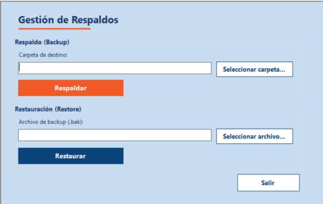

Inicio › Administrador › Gestión de respaldos
Gestión de respaldos
Un respaldo es una copia completa de la información del sistema (usuarios, productos, ventas, compras, bitácora...) en un archivo .bak. Si algo se rompe o se pierden datos, se restaura ese archivo y el sistema vuelve al estado en que estaba cuando se hizo la copia.
Dónde está: Administrador › Gestión de respaldosLo usa: AdministradorAtajo: F1
Pasá el mouse por encima de cualquier botón o campo de la pantalla para ver qué hace.

Qué hace cada elemento
- 1Carpeta de destinoMuestra la carpeta donde se va a guardar el respaldo. Se completa sola al elegir la carpeta con el botón de al lado.
- 2Seleccionar carpetaAbre el explorador de Windows para que elijas dónde guardar el respaldo. Conviene una carpeta fuera de la computadora del sistema, por ejemplo un pendrive o la nube.
- 3RespaldarGenera el archivo de respaldo en la carpeta elegida. Se llama SneakRushDB_fecha_hora.bak, así nunca pisa uno anterior.
- 4Archivo de backupMuestra el archivo .bak que vas a restaurar. Se completa al elegirlo con el botón de al lado.
- 5Seleccionar archivoAbre el explorador para elegir el archivo .bak a restaurar. Solo muestra archivos de ese tipo.
- 6RestaurarReemplaza TODA la base actual por el contenido del archivo elegido. Pide confirmación, cierra la sesión y reinicia el programa.
- 7SalirCierra esta pantalla y vuelve al menú principal.
Cómo hacerlo
Conviene hacerlo todos los días de trabajo o antes de cualquier cambio importante.
- Tocá Seleccionar carpeta... y elegí dónde guardar la copia.
- Tocá Respaldar.
- Espera el aviso "Backup generado correctamente en:" con la ruta completa del archivo.
- Guardá ese archivo en un lugar seguro, preferentemente en otro dispositivo.
Tené en cuenta: El respaldo es completo: incluye todas las tablas. Queda registrado en la Bitácora con criticidad Alta.
Usalo solo cuando de verdad necesites volver atrás.
- Tocá Seleccionar archivo... y elegí el archivo .bak.
- Tocá Restaurar.
- Leé el aviso de confirmación. Si estás seguro, tocá Sí.
- Cuando termina, el sistema avisa y se reinicia solo para cargar los datos restaurados. Volvé a iniciar sesión.
Tené en cuenta: Se pierde todo lo que se cargó DESPUÉS de la fecha del respaldo: ventas, compras, usuarios, cambios. No se puede deshacer. Antes de restaurar, hacé un respaldo del estado actual por si hace falta volver.
Para saber más
Mensajes que puede mostrar el sistema 7
| Mensaje | Qué significa y qué hacer |
|---|---|
| AvisoDebe seleccionar una carpeta de destino. | Tocaste Respaldar sin elegir carpeta. Usá Seleccionar carpeta primero. |
| ListoBackup generado correctamente en: (ruta) | El archivo ya existe en esa carpeta. Copialo a un lugar seguro. |
| ErrorOcurrió un error inesperado al generar el backup. / Error: (motivo) | No se pudo crear el archivo. Suele ser una carpeta sin permiso de escritura o sin espacio libre. Probá con otra carpeta. |
| AvisoDebe seleccionar un archivo .bak válido. | No elegiste archivo, el archivo ya no existe o no es un .bak. |
| ConfirmaciónLa restauración reemplazará TODA la base de datos actual y cerrará la sesión. ¿Desea continuar? | Sí restaura, No cancela y no cambia nada. |
| ListoBase de datos restaurada correctamente. La aplicación se reiniciará para recargar los datos. | Aceptá el aviso: el programa se reinicia y vas a ver el inicio de sesión. |
| ErrorOcurrió un error inesperado al restaurar el backup. | La restauración falló. El sistema intenta dejar la base disponible de nuevo. Revisá que el archivo no esté dañado o abierto en otro programa. |
Reglas a tener en cuenta 5
- Solo el Administrador puede respaldar y restaurar.
- El nombre del archivo lleva fecha y hora, por ejemplo SneakRushDB_20261111_160000.bak.
- Mientras se restaura, el sistema cierra cualquier otra conexión a la base para que nadie escriba datos a la mitad.
- Esta misma pantalla de restauración se abre desde Reparación de la base de datos, cuando el sistema detecta una inconsistencia: ahí aparece solo la parte de restaurar.
- Tanto el respaldo como la restauración quedan registrados en la Bitácora de eventos.
Temas relacionados
SneakRush · Ayuda del sistema · Gestión de respaldos. Podés abrir esta ayuda desde cualquier pantalla con la tecla F1.